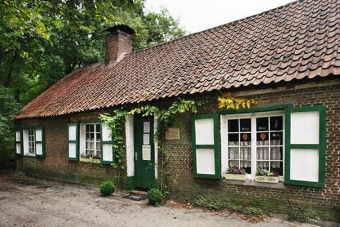

| Van Hendrik Conscience kan veel verteld worden. En voornamelijk wordt van hem gezegd:
De man die zijn volk leerde lezen
Hendrik Conscience geldt als één van de aartsvaders van de Vlaemsche Beweging. Zijn beroemde historische roman 'De leeuw van Vlaanderen' uit 1838 is een pleidooi voor de Vlaemsche emancipatie. Tegelijkertijd geeft het boek een krachtige impuls aan de ontwikkeling van de jonge Vlaemsche literatuur. Conscience heeft door zijn roman en door zijn politieke stellingname grote invloed in het Vlaanderen van zijn tijd. ‘Hij leerde zijn volk lezen’ is de meest gehoorde uitspraak over Hendrik Conscience.[i]
Geboren en overleden
Henri (Hendrik) Conscience werd geboren in Antwerpen op 3 december 1812 en overleden in Elsene op 10 september 1883 aan een slepende maagkwaal. Afscheid nam men op het Schoonselhof waar hij zijn laatste rustplaats vond. Een grafmonument met grafkelder, waar ook zijn echtgenote Maria Peinen begraven ligt[ii].
Hendrik Conscience was de derde, ziekelijke, zoon van de ongeletterde Cornelia Balieu, die prachtig kon vertellen, en Pierre Conscience, die tijdens de heerschappij van Napoleon Bonaparte voor de marine in Antwerpen werkte. Dit echtpaar kreeg acht kinderen. Enkel Hendrik en Jean-Balthasar bleven in leven. Zes jaar na het overlijden van zijn moeder huwde hij in 1826 met de veel jongere Anna Catharina Bogaerts. Samen kregen zij negen kinderen, waar er vijf van in leven bleven. Pierre, zijn vader, was Hendriks eerste onderwijzer. Henri ging ook sporadisch naar een privaatschool in Borgerhout, waar hij hulponderwijzer werd. Hij oefende zich vervolgens als autodidact in het Engels en het Frans en kon ondermeester worden in een van de voornaamste scholen van de stad. Naast schrijver was hij ook bestuurder, griffier, redacteur, arrondissementscommissaris en conservator van musea.
Zijn huwelijk en zijn kinderen
Hijzelf huwde in 1842 met Maria Peinen. Ze kregen vijf kinderen, van wie er vier jong overleden: Hildevert (Antwerpen 1843 - Diksmuide 1869 – 26 jaar), Machteld (Antwerpen 1848 - Antwerpen 1851 – 3 jaar), Marie (1852-1922 – 30 jaar), Clara (Antwerpen 1855 - Kortrijk 1857 – 2 jaar) en Hendrik (Antwerpen 1857 - Elsene 1869 – 12 jaar). Beide zonen overleden aan de gevolgen van tyfus, Clara aan kroep. Enkel Marie, had het geluk en trad in 1870 in het huwelijk met de dichter-componist Gentil Antheunis.
Het prachtige schrijven
Zijn prachtige teksten werden op een schilderende, fijne manier op papier gezet. Op die manier probeerde hij het Vlaemsche volk op te voeden en te onderwijzen. Toen België onafhankelijk werd in 1830, kon hij zich écht uiten als een Vlaemsche Nationalist. De Leeuw van Vlaenderen was nationalistisch ten voeten uit. Hij wilde, door deze roman, zijn volk veel meer zelfvertrouwen geven.
Henri, die bij het begin van de Belgische Revolutie op 28 september 1830 als vrijwilliger een dienstverbintenis voor twee jaar in het Belgische leger tekende, was achttien jaar toen hij in 1831 optrok tegen de Nederlanders. Ook in dat jaar werd zijn legercontract omgezet in een contract voor vijf jaar. Tijdens die veldtocht ontwikkelde hij in de Kempen een levenslange liefde voor de Kempense natuur en haar inwoners.
Zijn tegenslag
Conscience schreef aanvankelijk Franse gedichten. In 1837 publiceerde hij In ’t Wonderjaer. In 1566 Phantasy, maar deze werken kenden weinig succes. In deze tijd had hij ook zware financiële problemen. Hij kreeg van Leopold I een subsidie en de erefunctie van leraar Nederlands van de Koninklijke prinsen.
Het mooie werk
Zijn betere werk – Baas Gansendonck[iii] en De loteling, bijvoorbeeld - zijn er dan ook gesitueerd. Niet toevallig werd de zieke soldaat Henri in 1831 daar verzorgd, en werd hij er verliefd op Berthken, een zeventienjarige plaatselijke schone. Jan en Trien, de beide hoofdpersonages uit zijn roman De loteling, zijn duidelijk gemodelleerd naar de piepjonge zichzelf en zijn toenmalige muze. Ironisch genoeg zou de gearriveerde sergeant-majoor als arrondissementscommissaris in februari 1857 opnieuw verantwoordelijk worden voor de organisatie van de loting voor soldaten. [iv] Na korporaal, fourier, sergeant-majoor en onderwijzer van de regimentschool te zijn geweest, verliet hij het leger op 21 mei 1836. [v]
Het werd hem allemaal teveel en hij vluchtte weg uit de stad, naar Schilde en maakte er vele wandelingen. Op een dag kwam hij in een hoeve in Zoersel waar hij de inspiratie voor De loteling opdeed.
De schrijver werd hoogstwaarschijnlijk geïnspireerd tot het neerpennen van De leeuw van Vlaanderen na het zien van de schilderij De Groeningeslag. In deze roman beschrijft hij de Guldensporenslag (1302) die hij als achtergrond gebruikt om de liefdesavonturen te schetsen van Machteld, de dochter van Robrecht III van Bethune met ridder Adolf van Nieuwlandt. Een aantal passages in het boek strookten niet met de werkelijkheid. Later in Geschiedenis van België probeerde hij deze missstap recht te zetten. Met het grote succes van De leeuw van Vlaanderen verdiende Conscience de titel ‘de man die zijn volk leerde lezen’. Verder heeft dit boek sterk bijgedragen tot de Vlaemsche bewustwording in de 19de eeuw en de groei van de Vlaemsche Beweging tot in de 20ste eeuw én 21ste eeuw.
Bart De Wever stoft Hendrik Conscience af 10/07/11
Opvallend hoe Bart De Wever tijdens zijn 11-juli toespraak in Kortrijk de herinnering aan 'De Leeuw van Vlaanderen' van Hendrik Conscience in extenso oprakelde.
'Als wij hier uitgerekend op deze dag en op deze bijzondere plaats staan, voor dit monument, heeft dat wel degelijk met één man te maken. Met een andere Antwerpenaar namelijk, zijnde Hendrik Conscience.' Bart De Wever brak gisteren in het begin van zijn 11-juli redevoering voor het Groeninghe-monument te Kortrijk een lans voor het belang van Hendrik Conscience voor de Vlaemsche emancipatie, ook al worden zijn boeken - zo De Wever - vandaag niet meer gelezen.
De Wever hamerde erop dat Conscience in het collectieve geheugen zal gegrift staan zolang er een Vlaemsche gemeenschap bestaat 'omdat hij met zijn volkse boeken de ongeletterde Vlaming er toe aanzette om te lezen, en zo de aftrap gaf aan de sociale en intellectuele ontvoogding.'
Dat hij tot de verbeelding blijft spreken, bewezen trouwens de film- en toneeladaptaties naar zijn werk door onder anderen Roland Verhavert (De loteling) en Hugo Claus (Het goudland). Claus’ verfilming van De Leeuw van Vlaenderen is echter een karikatuur. Hij had er beter een poesjenellenversie van gemaakt - sommigen beweren trouwens dat Claus' legendarische filmflop net dat is: pure poppenkast. (spijtig)
De ommezwaai in 1850
In het midden van de 19de eeuw maakte de Vlaemsche meester een ommezwaai in zijn genre, namelijk dorpsverhalen en novellen. De stadsmens Conscience vindt rust en verademing in de observatie van eenvoudige buitenlieden en in de harmonieuze levenswijze van hun leefwereld.
De loteling
De schryver aen zyne vrienden.
Antwerpen, 15 November 1849.
Achtbare lezers en lezeressen,
Gy, myne goede vrienden, die den vertelder toch getrouw gebleven zyt, hoe erbarmelyk zyn naem ook door aengehitste driften over en weder werd gesleurd, - ik breng u heden eene goede tyding. Ik ben ziek geweest. Myn geest was vermoeid, myne ziel onttooverd, myn lichaem krank. Ik, door God ten minste met sterkmoedigheid en met een omvattend liefdegevoel begaefd, ik zonk neêr in den kolk der bitterste moedeloosheid, en ik voelde met afschrik een doodend vergif - misschien den haet tot het menschdom - in mynen verengden boezem zinken. Heb ik niet, voor de eerste mael myns levens, in deze onbegrypelyke tyden, alle baetzuchtige driften in werking.
De man van het detail én hedendaagse soaps
Dat je Conscience moet lezen als een meesterlijk voorbeeld van mondelinge literatuur, is duidelijk. In Baas Gansendonck wemelt het op elke bladzijde van de spreuken en gezegden, een procedé dat de scenarioschrijvers van Familie en Thuis blijkbaar onbewust van hem hebben afgekeken.
Een greep ut zijn werk
Onze grote Vlaemsche schrijver heeft meer dan één literair werk geschreven. Een greep uit zijn grote œuvre: [i]
In 't Wonderjaer 1566 (1837)
Phantasy (1837)
De Leeuw van Vlaenderen (1838)
Hoe men schilder wordt (1843)
Wat een Moeder lijden kan (1843)
Siska van Roosemael (1844)
Geschiedenis van België (1845)
Jacob van Artevelde (1849)
De Loteling (1850)
Baes Gansendonck (1850)
De Boerenkrijg (1853)
De omwenteling van 1830 (1858)
Bavo en Lieveken (1865) - Bekroond met de Staatsprijs voor Letterkunde
De Duivel uit het Slangenbos (1889) (Aangevuld en uitgegeven door zijn dochter Maria Antheunis-Conscience) |
Addendum
Baas Gansendonck (de link naar het verhaal in Wikipedia)
De Loteling (de link naar het verhaal in e-books van Google)
In de Antwerpse gemeente Zoersel bevindt zich het Boshuisje, waar Hendrik Conscience aan de roman de Loteling schreef. Een inscriptie aan de voorgevel herinnert hieraan. Het is nu nog steeds een herberg.

Hendrik Conscience en Gaston Durnez
CITATION Gas12 \l 2067 (Durnez, 2012) Gaston Durnez sprak op 14 januari 2012 in Schilde de feestrede uit voor de tweehonderdjarige jubilaris, en herlas de laatste maanden nagenoeg alles wat hij van de Vlaemsche volksschrijver bij uitstek te pakken kreeg. Hij raakte opnieuw in de ban van een rasverteller pur sang, aldus Durnez: 'Natuurlijk is zijn taal hier en daar sterk gedateerd, maar dat kan ook weleens charmeren. En het naturel spat van de bladzijden - zeker in zijn dorpsverhalen, genre Baas Gansendonck, en zijn zedenromans, zoals De loteling.
Zijn observatievermogen van het toenmalige volksleven is ongemeen scherp, ook al heeft hij de neiging om zijn vertellingen altijd op een positieve, verzoenende noot te eindigen.' Durnez merkt op dat Conscience veel werd gelezen en dan vooral voorgelezen in het milieu van gewone mensen: boeren en arbeiders dus. Conscience was zich daarvan bewust en schreef zijn melodramatische soaps op het lijf van zijn doelpubliek, aldus Durnez. De herkenbare manier waarop hij in zijn meer dan 100 romans en vertellingen vaak inzoomde op de sociale problematiek - van alcoholverslaving tot de diepste armoede - leidde mee tot zijn populaire succes. Zo komt het dat Conscience bij zijn begrafenis op 16 september 1883 in Antwerpen 153 bloemenkransen meekreeg.
Mijn mening
‘Vlaams of Vlaamse’ heb ik met plezier in de taal van de 19de eeuw van Hendrik geschreven, namelijk Vlaemsch of Vlaemsche’. Hendrik Conscience heeft volgens mij een fantastische, schilderachtige, fantasierijke en fijne woordenschat die hij doorheen al zijn werken gebruikt. Ik ben over mijn 1.500 woorden gegaan. Sorry, maar u weet ook dat H. Conscience nog wel het dubbel van de woorden verdient. Zijn werk is zoveel omvattend en zó mooi, dat je ergens een stop moet inlassen. Vóór ik aan deze oefening begon, had ik nog maar een kwart idee dat dit een man uit de duizenden was. Wat hij allemaal met zijn werk teweeg gebracht heeft kunt je gewoonweg niet beschrijven
Bedankt Hendrik voor deze erfenis, nu meer dan tweehonderd jaar geleden.
Fragment uit: Hoe men schilder wordt
Het kind ging bij de bedstede op zijne knieën zitten, en begon met de handen te zamen en met luider stemme te bidden:
's Avonds, als ik slapen ga,
Volgen mij veertien engeltjes na:
Twee aan mijn hoofdeneind,
Twee aan mijn voeteneind,
Twee aan mijn rechterzij,
Twee aan mijn linkerzij,
Twee die mij dekken,
Twee die mij wekken,
Twee die mij wijzen,
Naar 's hemels Paradijze [Vi].
|